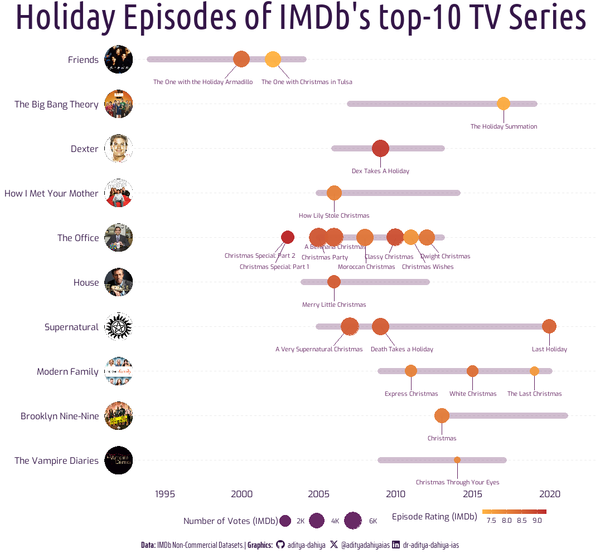
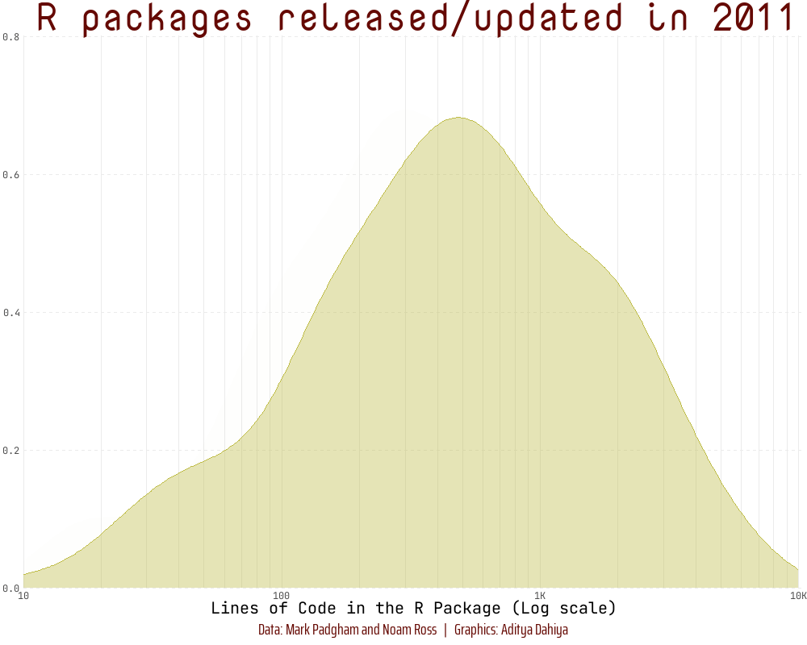
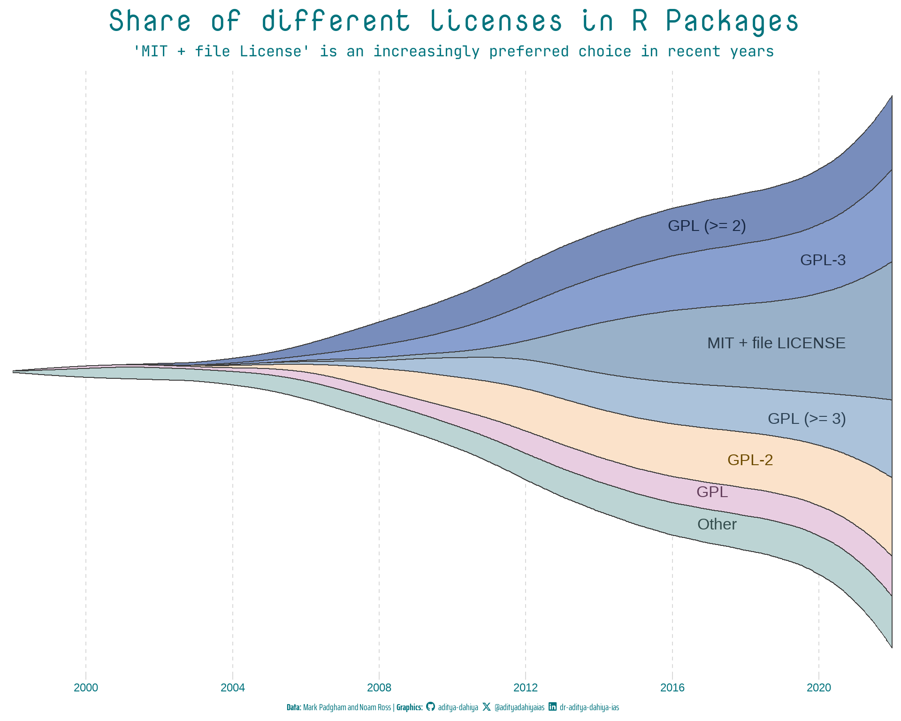

Data Visualization Projects
Examples of Visualizations Created for #TidyTuesday
Hey there, data enthusiasts! Feast your eyes on the visualizations meticulously crafted by yours truly. This spectacle unfolds every week as part of the #TidyTuesday Movement, a data-driven extravaganza ignited by the blazing passion of the R4DS Online Learning Community. We’re not just talking about any data; we’re talking about real-world datasets that pack a punch and make learning to dance with data a riveting experience.
But wait, there’s more! Before you dive headfirst into this visual feast, I’ve laid out the secrets behind the magic – the code, the portal to the dataset, and a description.
Welcome to the future of visual storytelling – where data meets design in a symphony of awe-inspiring graphics. Let the adventure begin! 🚀📊✨
Week 46: Diwali Sales
Diwali Sales at #TidyTuesday | Code | Data

Week 47: R-Ladies Chapter Events
R-Ladies Chapter Events at #TidyTuesday | Code | Data

Week 48: Doctor Who Episodes
Doctor Who Episodes at #TidyTuesday | Code | Data

Week 49: Life Expectancy
Life Expectancy (Our World in Data) at #TidyTuesday | Code | Data

Week 50: Holiday Movies
Holiday Movies by IMDb non-commercial datasets at #TidyTuesday | Code | Data

Week 51: Holiday Episodes
Holiday Episodes by IMDb non-commercial datasets at #TidyTuesday | Code | Data

Week 51: R Packages Structure
Historical Trends in R Package Structure and Inter-dependency on CRAN by Mark Padgham and Noam Ross at #TidyTuesday


2024
Week 1: Movie Theaters in Delhi (India)
Movie Theatre Data for 8 Indian Cities by Harsha Devulapalli at #TidyTuesday | Code | Data

Week 2: Canadian Hockey Player Birth Months
Inspired by Are Birth Dates Still Destiny for Canadian NHL Players? by JLaw at #TidyTuesday | Code | Data